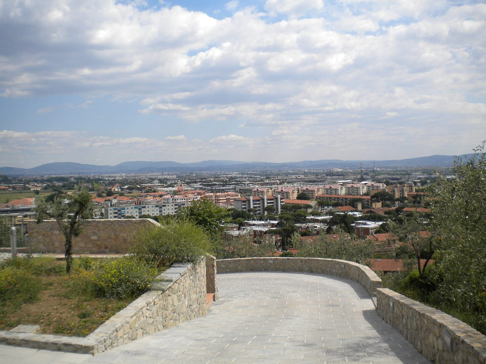

이탈리아 칼렌차노, 5명 숨진 에니 옛 연료저장소 18만㎡를 태양광 거점으로…면에 '발전 가치 5%'·1MW 설비 무상 이전 협약

토스카나주·칼렌차노 면·에니 협약 체결, 정화·인허가 마친 뒤 최대 20MW 태양광 추진…배터리 갖춘 1MW 설비는 면에 넘겨 지역 에너지공동체용, 큰 설비 전기 가치 5%는 최대 30년간 면 몫
2024년 12월 9일 폭발 사고로 5명이 숨지고 28명이 다친 이탈리아 토스카나주 칼렌차노(Calenzano)의 에니(Eni) 옛 연료저장소를 태양광 발전 거점으로 바꾸는 협약이 10월 27일 체결됐다. 에우제니오 자니(Eugenio Giani) 토스카나 주지사와 주세페 카로바니(Giuseppe Carovani) 칼렌차노 시장, 에니 측이 서명한 협약에 따라 약 18만㎡ 부지에서는 연료 저장·유통이 완전히 끝나고, 정화와 인허가 절차를 마친 뒤 약 1만 가구가 쓸 전기를 낼 수 있는 최대 20MW 태양광이 들어선다. 이와 별도로 배터리를 갖춘 약 1MW 설비를 체육시설 근처에 지어 면에 무상으로 넘기고, 에니는 큰 설비가 생산한 전기 가치의 5%를 설비 수명 동안 최대 30년까지 면에 주며 환경 조사·정화와 면 설비의 유지·관리도 맡기로 했다. 카로바니 시장은 두 설비를 합쳐 21MW로 칼렌차노 소비의 약 6분의 1을 채울 수 있고, 1MW 설비는 지역 에너지공동체가 쓸 수 있게 된다고 설명했다. 협약에는 고용 유지와 분기마다 여는 기술조정회의, 180일 안에 주 소유 옛 OMNI 건물을 되살리는 후속 협약, 프라티뇨네(Pratignone) 역 기능 강화도 담겼으나 사업비와 착공 시기는 나오지 않았다. 카로바니 시장은 칼렌차노가 화석연료 중심 에너지 모델에 묶였던 시절을 뒤로하게 됐다고 말했다.
시민에너지 관점
발전 가치의 5%를 최대 30년 동안 받고 1MW 설비는 아예 소유권째 넘겨받는다는 조건은, 지역이 사고 부지 위 발전소에서 임대료나 보상금에 그치지 않고 설비의 주인 자리까지 일부 가져왔다는 점에서 눈여겨볼 만하다. 같은 달 미국 뉴저지 우드바인이 옛 매립지 10MW 태양광에서 해마다 약 15만 달러 임대료와 주민 요금 할인을 기대하는 구조와 견주면 차이가 분명하다. 다만 5%는 이익이 아닌 전기 가치 기준이고 20MW 본 설비는 여전히 기업 몫이며, 1MW 설비도 주민이 회원으로 참여하는 에너지공동체에 실제로 넘어가야 의미가 산다. 국내에서도 위험시설이 떠난 부지나 폐부지를 재생에너지로 바꿀 때는 설비 일부를 지자체와 주민 공동체 소유로 넘기는 조건을 협약 단계부터 넣어야 한다.
출처: 055Firenze 2026-10-27 055Firenze 편집부 원문 보기
イタリア・カレンツァーノ、5人が死亡したEniの旧燃料貯蔵所18万㎡を太陽光拠点に…町に「発電価値の5%」と1MW設備の無償譲渡で協定
トスカーナ州・カレンツァーノ町・Eniが協定に署名、浄化と許認可を終えた後に最大20MWの太陽光を計画…蓄電池付き1MW設備は町に譲り地域エネルギー共同体向けに、大型設備の電力価値の5%は最長30年間町の取り分
2024年12月9日の爆発事故で5人が死亡し28人が負傷したイタリア・トスカーナ州カレンツァーノ（Calenzano）のEni旧燃料貯蔵所を、太陽光発電の拠点に転換する協定が10月27日に結ばれた。エウジェニオ・ジャーニ（Eugenio Giani）トスカーナ州知事とジュゼッペ・カロヴァーニ（Giuseppe Carovani）カレンツァーノ町長、Eni側が署名した協定により、約18万㎡の敷地では燃料の貯蔵・流通が完全に終わり、浄化と許認可の手続きを終えた後、約1万世帯分の電力をまかなえる最大20MWの太陽光が建設される。これとは別に蓄電池を備えた約1MWの設備をスポーツ施設の近くに建てて町に無償で譲り、Eniは大型設備が生む電力の価値の5%を設備の耐用期間中、最長30年にわたって町に支払うほか、環境調査・浄化と町の設備の維持管理も担う。カロヴァーニ町長は、二つの設備を合わせた21MWでカレンツァーノの消費の約6分の1をまかなえ、1MWの設備は地域のエネルギー共同体が使えるようになると説明した。協定には雇用の維持、四半期ごとの技術調整会議、180日以内に州所有の旧OMNI建物を再生する後続協定、プラティニョーネ（Pratignone）駅の機能強化も盛り込まれたが、事業費と着工時期は示されていない。カロヴァーニ町長は、カレンツァーノが化石燃料中心のエネルギーモデルに縛られた時代を後にすると語った。
市民エネルギーの視点
発電価値の5%を最長30年受け取り、1MWの設備は所有権ごと譲り受けるという条件は、地域が事故跡地の発電所から賃料や補償金にとどまらず、設備の持ち主の座まで一部手にしたという点で注目に値する。同じ月に米ニュージャージー州ウッドバインが旧埋め立て地の10MW太陽光で毎年約15万ドルの賃料と住民の料金割引を見込む仕組みと比べれば、違いは明らかだ。ただし5%は利益ではなく電力価値が基準で、20MWの本設備は依然として企業のものであり、1MWの設備も住民が会員として参加するエネルギー共同体に実際に渡ってこそ意味を持つ。韓国でも、危険施設が去った跡地や遊休地を再生可能エネルギーに転換する際には、設備の一部を自治体と住民の共同体の所有とする条件を協定の段階から盛り込むべきだ。
出典: 055Firenze 2026-10-27 055Firenze編集部 原文を読む
意大利卡伦扎诺把造成5人死亡的埃尼旧油库18万平方米改为光伏基地…签署协议给市镇发电价值5%并无偿移交1MW设施
托斯卡纳大区、卡伦扎诺市镇与埃尼签署协议，完成污染治理和审批后推进最多20MW光伏…配备电池的1MW设施移交市镇供地方能源社区使用，大型电站电力价值的5%在最长30年内归市镇
10月27日，意大利托斯卡纳大区卡伦扎诺（Calenzano）签署协议，把2024年12月9日发生爆炸、造成5人死亡28人受伤的埃尼（Eni）旧油库改造为光伏发电基地。根据托斯卡纳大区主席Eugenio Giani、卡伦扎诺市长Giuseppe Carovani与埃尼方面签署的协议，约18万平方米的场地将彻底停止燃料储存和配送，在完成污染治理和审批程序后，建设最多20MW、可满足约1万户家庭用电的光伏电站。此外还将在体育设施附近建设一座配备电池的约1MW设施并无偿移交市镇；埃尼将在设施使用寿命期内、最长30年，把大型电站所发电力价值的5%支付给市镇，并负责环境调查与治理以及市镇设施的维护管理。Carovani市长表示，两座设施合计21MW，可满足卡伦扎诺约六分之一的用电，1MW设施将可供地方能源社区使用。协议还包括保留就业、每季度召开技术协调会议、在180天内就大区所有的旧OMNI建筑再利用另签协议，以及加强Pratignone车站功能，但未提及项目投资额和开工时间。Carovani市长表示，卡伦扎诺将告别被以化石燃料为中心的能源模式所束缚的时代。
市民能源视角
最长30年获得发电价值的5%、1MW设施连同所有权一起移交，这些条件意味着地方从事故旧址上的电站中得到的不只是租金或补偿，而是部分拿到了设施主人的位置，值得关注。与同月美国新泽西州伍德拜恩在旧垃圾填埋场10MW光伏项目中预期每年获得约15万美元租金和居民电费折扣的结构相比，差别十分明显。不过，5%以电力价值而非利润为基准，20MW的主体电站仍归企业所有，1MW设施也只有真正交到由居民作为成员参与的能源社区手中才有意义。韩国在把危险设施迁出后的场地或废弃用地改作可再生能源时，也应从签署协议阶段起，就写入把部分设施交由地方政府和居民共同体所有的条件。
来源: 055Firenze 2026-10-27 055Firenze编辑部 查看原文
Italy's Calenzano signs deal to turn 180,000 m² former Eni fuel depot, where blast killed five, into solar hub; town gets 5% of power value and a 1 MW plant for free
Tuscany, Calenzano and Eni sign protocol for up to 20 MW of solar after clean-up and permits; a 1 MW plant with batteries goes to the town for a local energy community, and 5% of the value of the main plant's power goes to the town for up to 30 years
A protocol signed on October 27 will convert Eni's former fuel depot in Calenzano, Tuscany, where an explosion on December 9, 2024 killed five people and injured 28, into a solar power hub. Under the agreement signed by Tuscany President Eugenio Giani, Calenzano Mayor Giuseppe Carovani and Eni, fuel storage and distribution on the roughly 180,000 m² site will end for good, and once clean-up and permitting are complete, a solar plant of up to 20 MW, enough for about 10,000 households, will be built. Separately, a plant of about 1 MW with battery storage will be built near the town's sports facilities and handed to the municipality free of charge, while Eni will pay the town 5% of the value of the electricity produced by the main plant over its working life, up to 30 years, and will carry out environmental checks and clean-up and maintain the town's plant. Mayor Carovani said the two plants, 21 MW in total, could cover about one-sixth of Calenzano's consumption and that the 1 MW plant would be available to a local energy community. The protocol also covers keeping jobs, quarterly technical coordination meetings, a follow-up agreement within 180 days to restore the region-owned former OMNI building, and an upgrade of Pratignone station, but it gives no project cost or construction start date. Carovani said Calenzano is leaving behind an era tied to an energy model centred on fossil fuels.
Citizen Energy View
Receiving 5% of the power's value for up to 30 years and taking over a 1 MW plant outright means the community is getting not just rent or compensation from a plant on the disaster site but a share of the owner's seat, and that is worth noting. The contrast is clear with Woodbine, New Jersey, where the mayor expects a 10 MW solar plant planned this same month on the old landfill to bring the borough about $150,000 a year in rent and residents a discount on their bills. Still, the 5% is based on the value of the power rather than profit, the main 20 MW plant stays with the company, and the 1 MW plant will only matter if it actually goes to an energy community in which residents take part as members. In Korea too, when sites left behind by hazardous facilities or idle land are turned over to renewable energy, conditions transferring part of the plant to local government and resident ownership should be written in from the agreement stage.
Source: 055Firenze 2026-10-27 055Firenze staff Read the original